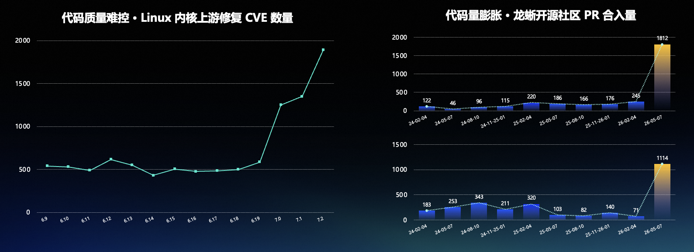
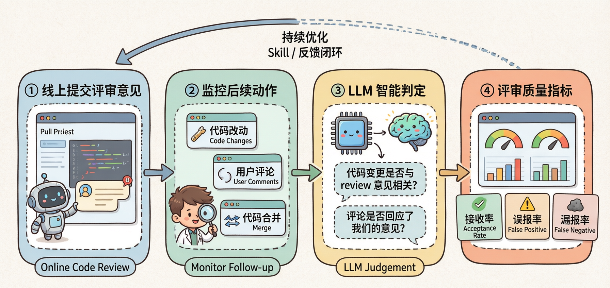
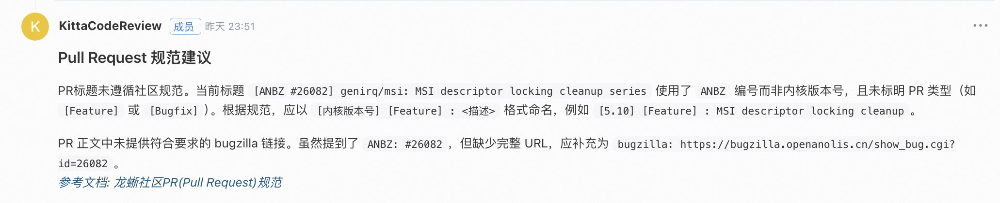
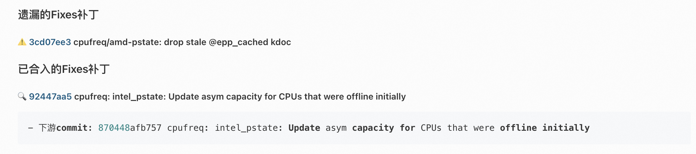
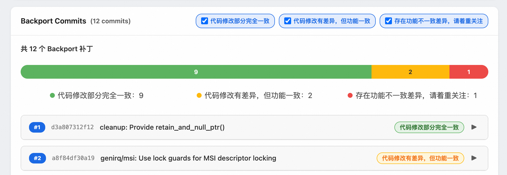
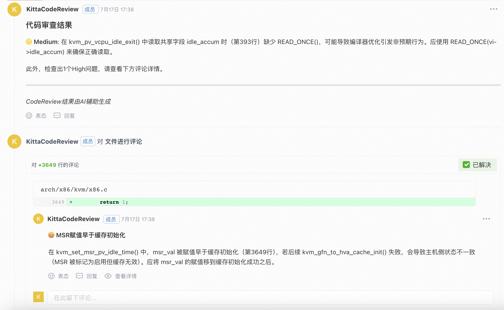

Kitta：领域专用 Code Review Agent¶
摘要¶
AI 辅助编程普及后，代码产出呈指数级增长，但审查人力并未同步扩张。内核等基础软件的 PR 体积与评审耗时激增，通用 AI Review 工具因缺乏领域知识与业务理解，难以满足专家级审查需求，研发效能的瓶颈正从“写”快速向“审”转移。
本白皮书将介绍 Kitta，一套面向领域深度定制的 Code Review Agent。它将通用智能体领域化，通过沉淀项目级专家资产、定制审查流程与领域知识库，并构建在线离线协同进化闭环，精准解决领域特定的代码问题。
Kitta 在龙蜥社区线上运行至今，累计完成超 7 万个补丁的审查，门禁准确率达 97%，合入率稳定在 62%。其领域定制方法论已在操作系统内核、编译器、云原生平台等六大领域验证，实现 17.0%–31.6% 的审查质量提升，成功将 Maintainer 的精力从逐行审查释放至关键争议裁决。
背景与现状¶
1.1 代码量暴涨之后，质量压力剧增¶
先看几组数字。
Linux 内核上游修复 CVE 的数量正在快速攀升：内核 6.9 到 6.19 各版本大致还在四五百的区间，到 7.0 已跳升至约 1250，7.2 更是逼近 1900，预估 7.3 版本时数字将超过 2000。放大到全行业，CVE 同比增长更为夸张——全部 +394%，高危 +811%（数据来源：Linux Foundation《The CRA Readiness Reality: What Changed and What Didn't Between 2025 and 2026》）。这组增长暴露了现状的代码质量压力：代码缺陷暴露的量和危害程度均在持续增加。随之而来地，开源软件项目需要合入的代码量也随之骤增。以龙蜥社区 ANCK 内核仓库为例，两个主流版本的分支合入 PR 在 AI Agent 引入后持续攀升。

研发效能侧的数据同样印证这一趋势。DORA（Google Cloud 旗下的研发效能研究项目）发布的年度报告《State of AI-assisted Software Development》显示：AI 深度参与开发的同时，代码 Bug 率 +9%，代码评审时间 +91%，平均 PR 体积 +154%（该版受访者约 5,000 人，数字为相关性口径而非因果结论）。
综上，在 AI Coding 人机共写的时代之下，编码已不再受人力限制，但审查的人力并没有同步增长。产能的瓶颈，正在从"写"转移到"审"。
1.2 Agentic CI 中的代码评审意义¶
面对这个趋势，龙蜥社区在探索 AI Native 研发组织的形态，把持续集成升级为智能化持续集成（Agentic Continuous Integration），整个流水线分为四个环节：
-
AI 协同编程——研发产能普遍激增，人机共写，编码已不再受人力限制；
-
智能化代码评审——需要检查研发规范与流程、架构与设计一致性、变更完整性与前置依赖、缺陷与安全风险；但人工审查资源不足，AI 评审势在必行；
-
智能化测试——包括深度漏洞挖掘、补丁定向测试、安全补丁验证、回归与性能测试，以及进一步验证测试；
-
社区审核合入——人来做最终的决定。
可以看到，AI 评审处在承上启下的位置：上游的 AI 协同编程把代码产量抬了上去，下游的智能化测试和社区合入又都建立在"进入测试和合入环节的代码是靠谱的"这个前提上。如果评审环节失守，要么缺陷漏到下游，要么 Maintainer 被人机共写产出的 PR 洪流淹没。这就是 Kitta 要解决的问题。
AI Code Review 的深层挑战¶
AI Code Review 带来了一些显而易见的红利，例如显著提升的响应速度、对基础缺陷问题的自动化拦截等等。然而，通用 AI Review 工具在核心业务里往往达不到专家级可用的审查需求。
拆开来看，当前通用 Code Review 方案在两个维度上都存在明显局限。一是工程行为约束不足：覆盖不全、位置漂移、效果不稳定——变更较大时倾向于只评审部分文件导致遗漏，报告的问题与实际代码位置对不上，评审质量随提示词的细微差异大幅波动。二是检查深度不足：缺乏对审查项目的语义理解，规则浮于表面——对每个项目、每次评审一视同仁，只能扫描代码本身的缺陷，感知不到项目特有的审查需求。具体表现为三个深层挑战：
领域知识匮乏。 跨领域技术栈差异大，且知识体系需要动态更新。通用模型见过很多代码，但未必懂内核的锁语义，也未必懂编译器的中间表示约定——而这些恰恰是评审结论对错的关键。
业务理解不足。 项目开发模式多样，审查的定位与功能需要贴合业务场景。对社区开源项目、企业内部仓库、发行版维护来说，"什么算问题、问题有多严重"的标准截然不同。
信任边界模糊。 缺乏客观的质量评估标准，以及难以对齐用户需求的进化机制。用户说"好"不一定是真的好，Agent 自我感觉良好更是靠不住——没有客观的评估与进化闭环，信任就无从建立。
一句话概括：当 AI 深度介入核心业务时，AI 能"看懂"代码，却未必"看懂"项目。
Kitta Code Review Agent 技术实践¶
针对这三个挑战，Kitta 的实践方案是把通用 Agent 领域化，通过"三步走"构建真正懂行的专家级 Code Review Agent。
3.1 第一步：项目级专家资产管理¶
领域知识不是凭空来的，而是从真实历史中提炼的。Kitta 从社区研发历史中的真实评审与缺陷记录出发，覆盖项目 GitHub 仓库等多源数据。原始记录经过采集关联、规整去噪、语义解析、隔离复现，沉淀为项目级专家资产；其中"隔离复现"是为了让每一条缺陷模式与预期结论都可验证、经得起追问，而不是把噪音当经验。这份资产包含两类核心内容：
-
评判标准——评审原则、缺陷模式、项目惯例，回答"按什么标准判"；
-
验证样本——问题样本、正常样本、预期结论，回答"判得对不对如何度量"。
这些资产可验证、可沉淀、可复用：换一个新项目，同样的管线可以把它的真实历史重新提炼成新的专家资产。这一步的本质，是让"懂行"从一种个人经验变成一种组织能力。
3.2 第二步：双轮驱动的代码审查定制¶
有了专家资产，接下来要解决"怎么看"的问题。Kitta 的做法是双轮驱动——流程定义看哪里，知识决定怎么看。下面以龙蜥社区 ANCK 的落地为例，看这两个轮子分别做了什么。
审查流程定制，让 AI 看得全：定义审查要看哪里，包括语义一致性、回合完整性、发行版规范、集成风险等维度——语义一致性防止补丁行为与预期背离；回合完整性盯住跨版本补丁序列是否完整、有无遗漏；发行版规范把关是否符合发行版的合入要求；集成风险评估变更进入代码库后的连带影响。四个维度确保该看的都看到，不漏项。
在 ANCK，流程定制的重点是回合补丁 Code Review。补丁回合是下游内核社区维护的高频操作：把上游补丁回合到下游时，往往要根据下游上下文做适配，既要准确判断适配是否正确，也要确认回合是否完整、有没有把上游后续的修复一并带回来。围绕这个场景，Kitta 定制了两项内核特定审查视角：
-
补丁语义一致性检查——识别回合补丁与上游原补丁的差异，并结合语义判断补丁功能的一致性。方案上先微观溯源、比对补丁级差异，再宏观评估整体功能是否一致，避免"逐行都对、整体变了"的漏判。
-
补丁完整性检查——智能追踪回合补丁的上游依赖链，自动识别上游对应的 Fixes 补丁，采用四阶段遗漏 Fixes 检索流程，杜绝已知漏洞的回归。
此外，针对下游产品化流程中"代码本身的质量审查只是其中一个环节"的现状，Kitta 还覆盖了 PR 描述规范检查、描述与代码的一致性检查等流程类审查项，把审查范围从代码本身扩展到研发流程的完整上下文。
领域知识定制，让 AI 看得深：决定问题怎么判，依托多源头层次化知识库，做子领域拆分，沉淀典型缺陷模式，让 Agent 的判断贴合该领域专家的真实经验，而不是泛泛的"最佳实践"。在 ANCK，这轮定制落地为三件事：
-
内核领域数据工程——收集多来源的内核领域知识，经过数据筛选、数据合成、数据均衡等处理流水线，得到领域知识库和 Benchmark 数据；
-
子系统专用知识库——内核不同子系统的评审关注点差异很大，按子系统组织专用知识库，让评审贴合各子领域的真实惯例；
-
深度审查流程——引入"有罪推定—全栈调用链分析—自我辩论"的审查流程：先假设代码有问题，沿全栈调用链追语义，再自我辩论验证结论，加强对内核常见关键代码风险的识别深度。
为了让定制效果可衡量，Kitta 还构建了Benchmark 评估体系：基于三类来源收集数据——LKML（真实社区 Reviewer 的评审过程，问题分布均匀、真实性强）、sashiko benchmark（单 commit—单 issue 精确对应）、龙蜥 Gitee 社区数据；并引入 sashiko、review-prompts、qoder 等多个 SOTA 代码审查工作参与横向评估，用对比结果指导 Skills 进化。
3.3 第三步：在线离线协同迭代进化¶
领域知识是活的，Agent 也要持续进化。Kitta 采用在线离线协同的迭代机制：
离线侧，验证样本循环优化——用验证样本做隔离评测，根据结果反思进化，持续校准 Agent 的判断标准。
线上侧，线上观测持续校准——基于 Review 意见内容和研发的后续代码行为，开发了对各类意见有效性进行智能分析汇总的评估框架，结合 Review 采纳率持续监控、知识更新、迭代校准与阈值调整，让 Agent 在真实使用中越用越准。

Kitta 落地效果¶
4.1 龙蜥社区内核仓库的实践¶
Kitta 已在龙蜥社区的真实研发流水线中持续落地运行，沿着一条完整的五阶段流水线对每一个内核 PR 进行审查。开发者提交 PR 或在评论中输入 /check-code-review 后，审查任务即被触发；整个流程先分类、再检查规范与依赖、最后落到代码质量，层层递进。
Stage 1. PR 分类。 Kitta 首先判断这是纯自研补丁还是回合补丁：如果 Commit 中存在类似 commit xxxx upstream 的上游补丁声明，则归为回合补丁。分类决定后续检查范围——纯自研补丁不会执行补丁完整性检查和回合一致性检查，避免不必要的开销。
Stage 2. PR/Commit Message 规范性检查。 基于龙蜥社区规范文档，对 PR 描述、Commit Title、Commit Message 等进行检查。这一步看起来"轻"，却能提前拦住大量因描述不清、标题不规范导致的维护成本。没有问题则不报告；有问题则给出 Message 规范建议，供开发者参考。

Stage 3. 补丁完整性检查。 针对回合补丁，Kitta 会智能追踪其上游依赖链，自动识别上游对应的 Fixes 补丁，按"检索上游 Fixes → 判断是否在 PR 中 → 判断是否在下游仓库已存在"的流程排查遗漏。检查结果分为三类：无遗漏 Fixes 表示无需补充；已合入的 Fixes 补丁 说明相关修复已存在于下游仓库；遗漏的 Fixes 补丁 则要求开发者补充，防止已知漏洞被重新引入下游。

Stage 4. 补丁回合一致性检查。 对于声明了上游来源的回合补丁，Kitta 会先获取上游原补丁，再从三个层次对比：基础对比看修改的文件和代码块是否一致；上下文对比看引用的符号、函数、变量定义是否一致、是否做了合理适配；语义对比则通过 LLM 判断上下游补丁是否实现了相同功能和语义。检查结果从 consistent 到 text-inconsistent、semantic-inconsistent、inconsistent分层输出，让开发者和 Maintainer 快速定位差异性质。

Stage 5. 代码质量审查。 最后落到代码本身，Kitta 将审查出的问题按严重程度分为 Critical、Medium / Low，Critical 问题通常会以内联评论定位到具体代码行，需要开发者处理或明确是否为误报；未发现风险则给出 LGTM。

Kitta 上线至今，核心运行数据如下：
| 指标 | 数值 |
|---|---|
| 审查规模 | 7 万+ |
| 门禁准确率 | 97% |
| 代码合入率 | 62% |
ANCK 的代码变更以回合补丁和自研补丁为主，既要保证与上游语义一致，又要适配下游产品化需求，审查深度和准确率要求都很高。基于线上评估框架对 Kitta 上线以来处理过的所有已合入 PR 进行回溯统计，两类核心场景都取得了可量化的效果：
-
回合补丁场景：一致性检查意见采纳率 70.4%、准确率 99.8%；
-
自研 PR 场景：Code Review 意见采纳率 41.8%、准确率 73.6%；
Kitta 的介入让大量代码问题在进入人工审查之前就被识别，并给出可定位、可验证的修改建议。实践中，很多 PR 在 Kitta 给出意见后，开发者会直接依据建议补充依赖补丁或调整实现，大幅减少了 Maintainer 反复追问、来回确认的回合数。对社区 Maintainer 来说，这意味着他们可以把注意力从"逐行看变更"转移到"判断关键争议点"；对开发者来说，则意味着更快的反馈和更可预期的合入节奏。
4.2 Benchmark 评估体系：让定制效果可衡量¶
为了让定制效果可衡量，Kitta 还构建了 Benchmark 评估体系：基于三类来源收集数据——LKML（真实社区 Reviewer 的评审过程，问题分布均匀、真实性强）、sashiko benchmark（单 commit—单 issue 精确对应）、龙蜥社区数据。其中：
-
LKML 数据让 Kitta 能够对齐真实社区 Reviewer 的判断标准
-
sashiko benchmark 提供了严格的单 commit—单 issue 映射，让能力改进方向足够聚焦
-
龙蜥社区数据则把评估拉回到 Kitta 实际服务的仓库语境中
通过与 sashiko、review-prompts、qoder 等 SOTA 方案横向对比，Kitta 能够清楚看到自身在特定缺陷类型、特定子系统上的差距，并把这些差距转化为 Skill 迭代的优先级。后续该 Benchmark 系统还将支持接入其他 Skills/Benchmark 进行评估，持续迭代优化能力。
4.3 跨领域通用实践¶
Kitta 的能力并不局限于内核。通过把专家资产和审查流程抽象为可迁移的 Skill，Kitta 已经在操作系统内核、编译器、文件系统、网络系统、云原生平台、AI 计算框架六个领域完成验证。这些领域共同的特点是代码规模大、语义深、审查门槛高，传统通用 Review 工具往往难以给出有价值的结论。Kitta 在这些场景下的表现如下：
| 领域 | 审查质量提升 |
|---|---|
| 操作系统内核 | 20.4% |
| 编译器 | 24.4% |
| 文件系统 | 17.0% |
| 网络系统 | 19.8% |
| 云原生平台 | 31.6% |
| AI 计算框架 | 21.7% |
跨领域的稳定提升说明 Kitta 的"领域定制"方法论具有通用性：无论是内核的锁语义、编译器的中间表示，还是云原生平台的配置约定，都可以通过沉淀专家资产、定制审查流程来构建专家级 Review 能力。这也为后续向 LLVM、CRIU、BaseOS 等更多基础软件项目扩展奠定了基础。
4.3 数据飞轮：数据向下沉淀，模型能力向上反哺¶
Kitta 在服务过程中还在持续沉淀数据，可以用于千问基座模型的形成"数据向下沉淀、能力向上反哺"的飞轮：
| 沉淀的数据 | 反哺的能力 |
|---|---|
| 专家标注的 Benchmark 基准数据集 | 漏洞发现能力——更深入的语义理解与潜在漏洞发现 |
| Agent 思维链轨迹跟踪数据 | 指令跟随能力——更准确的工具调用与指令遵循 |
| 用户偏好对齐数据 | 用户对话能力——贴近用户需求的评审意见表达 |
| 用户后续 Coding 动作 | 代码生成能力——更好的跨语言 Coding 与 Debug 能力 |
评审过程中产生的专家标注、思维链轨迹、用户偏好与后续代码改动，既是改进 Review 服务本身的燃料，也在反哺基座模型更基础的能力。反哺基座模型更基础的能力。更重要的是，这些数据来自真实的社区运行，而不是人工构造的静态数据集，因此每一次迭代都在让 Kitta 更贴近实际研发场景。
实践总结：AI Code Review 的边界与共识¶
经过落地实践后，我们发现要想最大化 AI Code Review 的效果，首先需要明确的是 AI 与人在协作中的信任边界。Kitta 遵循三条原则：
精准分级，克制打扰——严守门禁底线，释放建议空间。 对安全漏洞和破坏坚决拦截 CI 流程，这是底线；其余问题分级呈现、仅作提示，不过多占用开发者的注意力，平衡问题披露阈值。
行为作证，拒绝自嗨——用户可能沉默，但代码变更骗不了人。 不把开发者的默默无视当成认可，不看用户说什么，看"代码改了什么"：通过置信度熔断与追踪真实代码变更，基于客观变更驱动审查和模型迭代。
人类兜底，适时退场。 AI 是探照灯，照亮风险、给出证据；Maintainer 是方向盘，最终决策权在人，是最后一道防线。
最好的 AI 门禁，不是替代 Maintainer，而是让他们只把精力花在真正需要人类智慧的地方。
本文档为技术能力介绍材料，文中数据来源于内部评测与生产环境统计。